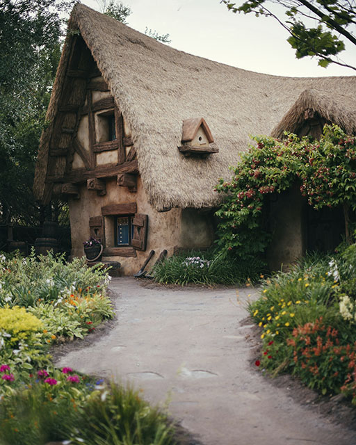

A
AJUSTEMENT DE L'OBJET (OBJECT-FIT)
Rôle
La propriété object-fit régit la manière dont une image, un vidéo ou un autre média s'intégrera dans un conteneur parent.
Avantage
Elle permet de sauver du temps en évitant de passer par des logiciels de correction photo pour recadrer, comme Adobe Photoshop, et d'appliquer directement un encadrement souhaité en utilisant les propriétés suivantes :
- fill;
- contain;
- cover;
- none;
- scale-down.
Exemples
Contain
Code
.objet-conteneur {
width: 15rem;
height: 15rem;
border: 5px solid var(--orange-color);
object-fit: contain;
}Résultat
Cover
Code
.objet-conteneur2 {
width: 15rem;
height: 15rem;
border-radius: 1rem;
border: 5px solid var(--orange-color);
object-fit: cover;
}Résultat
ANIMATION
Rôle
La propriété d'animation anime progressivement un élément entre plusieurs styles CSS applicables, sans recourir à l'utilisation de JavaScript, à partir de la règle @keyframes.
Avantage
Il s'agit d'un raccourci qui permet de sauver du temps en regroupant toutes ces propriétés :
- animation-delay;
- animation-direction;
- animation-duration;
- animation-fill-mode;
- animation-iteration-count;
- animation-name;
- animation-play-state;
- animation-timeline;
- animation-timing-function.
Exemple
Ici, la recharge de notre batterie pulsera à toutes les 1,5 secondes en alternant la direction de l'animation infiniment :
Code
.animation {
display: flex;
justify-content: row;
justify-content: space-between;
width: 0.8rem;
height: 1.5rem;
border-radius: 0.2rem;
background-color: var(--white-color);
border: 2px solid var(--yellow-color);
animation: batterie 1.5s alternate infinite;
}
@keyframes batterie {
0% {background-color: var(--white-color);}
100% {background-color:
svar(--terracotta-color);}
} Résultat
B
BACKGROUND-CLIP
Rôle
La propriété background-clip permet de spécifier à quel élément s'accroche l'arrière-plan.
Avantage
Il agrémente la mise en page des conteneurs à l'aide des valeurs suivantes :
- border-box : l'arrière-plan rempli le conteneur et s'accroche jusqu'à l'extérieur de la bordure de l'élément;
- padding-box: l'arrière-plan rempli le conteneur et s'accroche au bord extérieur du padding, sans passer sur la bordure;
- content-box : l'arrière-plan s'accroche aux bordures du conteneur, sans passer sur la bordure;
- text : l'arrière-plan s'accroche au texte seulement.
Exemples
Code
.border-item {
padding: 3rem;
color: var(--white-color);
background-color: var(--brown-color);
border: 3px solid var(--yellow-color);
background-clip: border-box;
}
.content-item {
justify-content: center;
color: var(--white-color);
padding: 3rem;
background-color: var(--brown-color);
border: 3px solid var(--yellow-color);
background-clip: content-box;
}/code>Résultat
Voici un exemple de border-box
Voici un exemple de content-box
BORDURE ARRONDIE (BORDER-RADIUS)
Rôle
La propriété raccourcie border-radius définie l'arrondi d'un ou de plusieurs coins d'un élément à même l'arrière-plan, même si cet élément n'en contient pas à la base.
Avantages
Cet outil permet d'économiser du temps en regroupant plusieurs propriétés, en évitant de passer par des logiciels de correction photo, comme Adobe Photoshop, et d'appliquer directement un arrondi pour obtenir le changement souhaité en utilisant le pourcentage ou la longueur en tant que mesure.
Exemple
Voici un rectangle possédant de multiples coins arrondis à divers degrés.
Code
.radius-container {
width: 18rem;
height: 15rem;
background-color: var(--terracotta-color);
border-radius: 50% 38% 45% 20%;
}Résultat
BOX-SHADOW
Rôle
La propriété box-shadow crée une ou plusieurs ombres sur une boîte.
Avantages
Elle s'adapte également aux bordures arrondies. Cette propriété peut inclure les valeurs suivantes :
- length;
- offset-x;
- offset-y;
- blur-radius;
- spread-radius;
- inset;
- color.
Exemple
Code
.shadow-exemple1 {
display: flex;
justify-content: center;
width: fit-content;
padding: 1rem 2rem;
border-radius:1rem;
text-align: center;
box-shadow: rgba(89, 18, 2, 0.25) 0px 50px 100px -20px, rgba(0, 0, 0, 0.3) 0px 30px 60px -30px, rgba(140, 28, 3, 0.35) 0px -2px 6px 0px inset;
}
.shadow-exemple1 h2 {
padding: 0;
}Résultat
Ombre
Exemple
Code
.shadow-exemple2 {
display: flex;
justify-content: center;
width: fit-content;
padding: 1rem 2rem;
border-radius:1rem;
text-align: center;
box-shadow: rgba(0, 0, 0, 0.17) 0px -23px 25px 0px inset, rgba(0, 0, 0, 0.15) 0px -36px 30px 0px inset, rgba(0, 0, 0, 0.1) 0px -79px 40px 0px inset, rgba(0, 0, 0, 0.06) 0px 2px 1px, rgba(0, 0, 0, 0.09) 0px 4px 2px, rgba(0, 0, 0, 0.09) 0px 8px 4px, rgba(0, 0, 0, 0.09) 0px 16px 8px, rgba(0, 0, 0, 0.09) 0px 32px 16px;
}Résultat
Ombre
C
Multicolonnes (Columns)
Rôle
La propriété enrichie columns permet de définir la largeur souhaitée des colonnes ainsi que leur nombre.
Avantages
C'est un raccourci qui permet d'économiser du temps et de regrouper au même endroit ces informations. Les options suivantes sont à définir :
- column-width;
- column-count.
Exemple
Voici un texte sur deux colonnes avec une bordure centrale :
Code
.colonne > p {
padding: 0 1rem ;
columns: 2 3rem ;
column-rule: solid 2px var(--brown-color);
column-fill: balance;
}
.colonne p:first-of-type {
margin-top: 0;
}
.colonne p:last-of-type {
margin-bottom: 0;
}
.colonne h4 {
column-span: all;
padding: 0 0 1rem 1rem;
}Résultat
Extrait du livre : Geisha
" Je me retrouvais au bord des falaises, à fixer les ténèbres. J'entendais les vagues en contrebas. Ce ressac violent me parut comme une lamentation amère. Je voyais de la cruauté en tout - comme si les arbres, le vent, les rochers sur lesquels je me tenais s'alliaient avec ma vieille ennemie, Hatsumomo. Le hululement du vent, les feuilles qui bruissaient, semblaient se moquer de moi. Mon destin avait-il pris un tour irrémédiable ? Je sortis le mouchoir du président de ma manche. Je tendis le bras au-dessus du vide. J'allais lâcher le mouchoir dans les ténèbres, quand je pensais aux tablettes mortuaires que m'avait envoyées M.Tanaka, il y avait des années de ça. Il faut toujours garder un souvenir de nos chers disparus. Les tablettes mortuaires , à l'okiya, étaient tout ce qui me restait de mon enfance. Le mouchoir du président serait tout ce qui resterait de ma vie de femme. "
D
DÉBORDEMENT (OVERFLOW)
Rôle
La propriété oveflow gère l'excédent du texte ou de l'image qui déborde d'un conteneur.
Avantages
Améliore le contrôle du contenu de la mise en page à l'aide des valeurs suivantes :
- visible;
- hidden;
- scroll;
- clip;
- auto;
- initial;
- inherit.
Exemple
Il s'agit d'un texte qui sera accessible avec une barre de défilement à droite.
Code
.overflow-container {
width: 15rem;
height: 10rem;
border: 5px solid var(--terracotta-color);
overflow-x: hidden;
overflow-y: scroll;
box-shadow: 5px 10px rgba(0, 0, 0, 0.5);
}Résultat
Aujourd'hui je sais que notre univers n'est pas plus réel qu'une vague qui se dresse à la surface de l'océan. Quels que soient nos luttes, nos triomphes, quelle que soit la façon dont ils nous affectent, ils ne tardent pas à se fondre en un lavis, à s'estomper, comme de l'encre diluée sur du papier.
DÉCORATION TEXTUELLE (TEXT DECORATION)
Rôle
La propriété text decoration permet de gérer les effets d'emphase et de mise en forme du texte, comme le soulignement, l'alignement, les ombres, etc.
Avantage
Il améliore grandement la mise en page à partir des valeurs suivantes:
- text-decoration-color;
- text-decoration-line;
- text-decoration-style.
Exemple
Voici un texte qui sera souligné en vague de couleur jaune.
Code
.decoration-exemple {
padding: 1rem;
text-decoration: underline wavy var(--yellow-color);
}Résultat
Décoration textuelle
DÉGRADÉ DE COULEUR (GRADIENT)
Rôle
Cette propriété réalise une transition dynamique, soit un mélange progressif, entre deux ou plusieurs couleurs opaques ou non.
Avantages
L'usage des dégradés (gradient) évite d'utiliser des images matricielles pour obtenir cet effet. Il réduit ainsi la charge sur la bande passante et le temps de téléchargement. Voici les types de dégradés possibles :
- linear-gradient;
- radial-gradient;
- conic-gradient.
Exemple
Code
.gradient-container {
width: 50vw;
height: 10rem;
border-radius: 1rem;
background: linear-gradient(to left, var(--brown-color), var(--terracotta-color), var(--yellow-color-p), var(--yellow-color));
}Résultat
E
À VENIR!
F
FILTRE (FILTER)
Rôle
La propriété filter vise à ajuster la couleur, l'exposition, le contraste, etc., des images, des arrières-plans ou des éléments comme des bordures.
Avantages
Cet outil permet de sauver du temps en évitant de passer par des logiciels de correction photo, comme Adobe Photoshop, et d'appliquer directement un filtre pour obtenir le changement souhaité. Il suffit de choisir parmi les fonctions suivantes :
- blur;
- brightness;
- contrast;
- drop-shadow;
- grayscale;
- hue-rotate;
- invert;
- opacity;
- saturate;
- sepia.
Exemple
Photo d'origine
Filtre blur sur la photo
Code
.filter-blur {
width: 90vw;
border: 3px solid var(--yellow-color-p);
border-radius: 5rem;
filter: blur(0.5px);
}Résultat
Filtre sepia sur la photo
Code
.filter-sepia {
width: 90vw;
border: 3px solid var(--yellow-color-p);
border-radius: 10rem;
filter: sepia(70%);
}Résultat
Filtre hue-rotate sur la photo
Code
.filter-hue {
width: 90vw;
border: 3px solid var(--yellow-color-p);
border-radius: 10rem;
filter: hue-rotate(30deg);
}Résultat
Filtre grayscale sur la photo
Code
.filter-grayscale {
width: 90vw;
border: 3px solid var(--yellow-color-p);
border-radius: 10rem;
filter: grayscale(70%);
}Résultat
FLEXBOX
Rôle
Cette méthode adaptative permet de distribuer rapidement et efficacement des éléments en colonne et en ligne à partir d'un axe principal.
Avantages
Le contenu du flexbox s'adapte à la taille de l'écran, permettant rendre la taille des éléments flexibles et de les faire suivre sur la ligne suivante, au besoins.
Voici les propriétés du conteneur parent :
- display;
- flex-direction;
- flex-wrap;
- flex-flow;
- justify-content;
- align-items;
- align-content;
- gap;
- row-gap;
- column-gap.
Voici les propriétés du conteneur enfant :
- order;
- flex-grow;
- flex-shrink;
- flex-basis;
- flex;
- align-self.
Exemples
Voici un exemple simple de cette méthode avec un alignement en colonne :
Code
.flex-container1 {
display: flex;
flex-direction: column;
justify-content: center;
align-items: center;
gap: 1rem;
padding: 1rem;
}
.flex-item {
display: flex;
align-items: center;
font-weight: 700;
background-color: var(--yellow-color);
border: 2px solid var(--terracotta-color);
}
.flex-item > p {
padding : 1rem 0;
font-weight: 700;
gap: 1rem;
}Résultat
1
2
3
4
Voici un exemple de cette méthode avec un alignement sur la ligne centré :
Code
.flex-container2 {
display: flex;
flex-direction: row;
justify-content: center;
align-items: center;
gap: 1rem;
padding: 1rem;
}1
2
3
4
Voici un exemple de cette méthode avec un alignement en space-between sur la ligne :
Code
.flex-container3 {
display: flex;
flex-direction: row;
justify-content: space-between;
align-items: center;
gap: 1rem;
padding: 1rem;
}1
2
3
4
G
GRILLE CSS (GRID)
Rôle
La grille a révolutionné la mise en page en créant un conteneur parent composé de colonnes et de lignes dans lequel le contenu est distribué verticalement et horizontalement.
Avantages
Il permet d'éliminer le recours aux diverses positions et aux autres truchements pour aligner précisément le contenu d'une page Web. De plus, la majorité des propriétés de la grille se font à même le conteneur parent. Voici toutes les propriétés qui y sont liées :
- display;
- grid-template-columns;
- grid-template-rows;
- grid-template-areas;
- grid-template;
- grid-auto-columns;
- grid-auto-rows;
- grid-auto-flow;
- grid;
- grid-row-start;
- grid-column-start;
- grid-row-end;
- grid-column-end;
- grid-row;
- grid-column;
- grid-area;
- row-gap;
- column-gap;
- masonry-auto-flow;
- align-tracks;
- justify-tracks.
Exemples
Voici un exemple simple de son utilisation :
Code
.grid-container {
display: grid;
grid-template-columns: repeat(4, 1fr);
border: 2px solid var(--terracotta-color);
background-color: var(--yellow-color-p);
justify-content: center;
align-items: center;
padding: 0.5rem;
gap: 0.5rem;
}
.grid-item {
display: grid;
background-color: var(--yellow-color);
border: 2px solid var(--terracotta-color);
}
.grid-item > p {
font-weight: 700;
padding: 0;
}Résultat
1
2
3
4
5
6
7
8
Voici un exemple plus élaboré de son utilisation :
Code
.grid-container2 {
display: grid;
grid-template-columns: repeat(4, 1fr);
border: 2px solid var(--terracotta-color);
background-color: var(--yellow-color-p);
justify-content: center;
align-items: center;
padding: 0.5rem;
gap: 0.5rem;
}
.item1 {
grid-column: 1/5;
}
.item2 {
grid-row: 2 / 4;
padding: 1rem 0;
}
.item5 {
grid-area: 2 / 4 / 5 / 4;
padding: 2rem 0;
}.item8 {
grid-column: 1 / 3;
padding: 0 1rem;
} Résultat
1
2
3
4
5
6
7
8
9
H
À VENIR!
I
À VENIR!
J
À VENIR!
K
À VENIR!
L
À VENIR!
M
MODE DE FUSION DE L'ARRIÈRE-PLAN (BACKGROUND BLEND MODE)
Rôle
Il s'agit de divers modes de fusion qui s'appliquent sur une image d'arrière-plan.
Avantages
Cet outil permet de sauver du temps en évitant de passer par des logiciels de correction photo, comme Adobe Photoshop, et d'appliquer directement un mode de fusion pour obtenir le changement souhaité. Il suffit de choisir parmi les modes suivantes :
Résultat
- normal;
- multiply;
- screen;
- overlay;
- darken;
- lighten;
- color-dodge;
- saturation;
- color;
- luminosity.
Exemple
Sans fusion
Avec fusion
Code
.fusion-exemple {
width: 50vh;
height: 12rem;
border-radius: 1rem;
background-color: var(--orange-color);
background-image: url(../../IMG/montagne.jpg);
background-size: cover;
background-blend-mode: hard-light;
}N
À VENIR!
O
OPACITÉ (OPACITY)
Rôle
La propriété d'opacité précise le degré de transparence d'un élément HTML à l'aide d'un nombre entre 0.0 et 0.1 ou un pourcentage.
Avantages
Il permet d'élargir la gamme d'effets de couleur dans une page Web.
Exemple
Texte
Résultat
P
À VENIR!
Q
À VENIR!
R
REDIMENSIONNER (RESIZE)
Rôle
La propriété resize offre la possibilité à l'utilisateur de redimensionner un élément à partir de la poignée située en bas, à droite de l'élément.
Avantages
Dynamise l'interaction en permettant à l'usager d'adapter le contenu selon ses besoins et à l'aide des mots-clés suivants :
- none;
- both;
- horizontal;
- vertical;
- block;
- inline.
Exemple
Texte
Résultat
Cliquez sur la poignée en bas, à droite, pour redimensionner l'élément.
S
À VENIR!
T
TRANSFORMATION (TRANSFORM)
Rôle
La propriété de transformation transform permet de modifier visuellement des formes en 2D ou en 3D sur les axes des X (abscisses) et des Y (ordonnées).
Avantages
Grâce à celle-ci, il est possible d'effectuer une translation, une distorsion, une rotation et de jouer avec l'échelle d'une forme ou de créer un ensemble de l'une de ses fonctions à même la propriété transform.
Ses fonctions sont les suivantes :
- matrix (seul et 3D)
- translate (seul, X, Y, Z et 3D)
- scale (seul, X, Y, Z et 3D)
- skew (seul, X, Y, Z et 3D)
- perspective
- ensemble de fonctions
Exemple
Départ
Ici, nous avons un verre avec trois glaces :
.transform-verre {
position: relative;
width: 7rem;
height: 10rem;
background-color: var(--brown-color);
opacity: 0.8;
border-radius: 0.2rem 0.2rem 1rem 1rem;
margin: 1rem;
}
.glace1 {
position: absolute;
background-color: var(--yellow-color);
width: 2.3rem;
height: 2.3rem;
border-radius: 0.2rem;
left: 0.3rem;
top: 0.5rem;
}
.glace2 {
position: absolute;
background-color: var(--yellow-color);
width: 2.3rem;
height: 2.3rem;
border-radius: 0.2rem;
right: 1.5rem;
top: 3rem;
}
.glace3 {
position: absolute;
background-color: var(--yellow-color);
width: 2.3rem;
height: 2.3rem;
border-radius: 0.2rem;
right: 1rem;
top: 7rem;
}Rotation
Le verre tombe par terre. Une rotation avec transform est effectuée sur le verre. Par conséquent, les glaçons sortent du verre.
Code
.transform-verre-2 {
position: relative;
width: 7rem;
height: 10rem;
background-color: var(--brown-color);
opacity: 0.8;
border-radius: 0.2rem 0.2rem 1rem 1rem;
margin: 1rem;
transform: rotate(90deg);
}Résultat
Échelle (scale)
Les glaçons tombés du verre. La propriété scale est effectuée sur les glaçons pour les diminuer puisqu'ils fondent.
Code
.glace1-3 {
position: absolute;
background-color: var(--yellow-color);
width: 2.3rem;
height: 2.3rem;
border-radius: 0.2rem;
right: 0;
top: -3rem;
transform: scale(-0.5, -0.5);
}
.glace2-3 {
position: absolute;
background-color: var(--yellow-color);
width: 2.3rem;
height: 2.3rem;
border-radius: 0.2rem;
right: 0;
top: -6rem;
transform: scale(-0.8, -0.8);
}
.glace3-3 {
position: absolute;
background-color: var(--yellow-color);
width: 2.3rem;
height: 2.3rem;
border-radius: 0.2rem;
right: 0;
top: -8.5rem;
transform: scale(-0.4, -0.4);
}Résultat
Distorsion (skew)
La propriété skew est effectuée un rectangle .
Code
.glace1-4 {
position: absolute;
background-color: var(--yellow-color);
width: 2.3rem;
height: 2.3rem;
border-radius: 0.2rem;
right: 0;
top: -3rem;
transform: scale(-0.5, -0.5) skew(5deg, 5deg);
}
.glace2-4 {
position: absolute;
background-color: var(--yellow-color);
width: 2.3rem;
height: 2.3rem;
border-radius: 0.2rem;
right: 0;
top: -6rem;
transform: scale(-0.8, -0.8) skew(10deg, 10deg);
}
.glace3-4 {
position: absolute;
background-color: var(--yellow-color);
width: 2.3rem;
height: 2.3rem;
border-radius: 0.2rem;
right: 0;
top: -8.5rem;
transform: scale(-0.4, -0.4) skew(5deg, 5deg);
}Résultat
Translation (translate)
.translate-container {
width: 10rem;
height: 10rem;
background-color: var(--yellow-color-p);
border: 2px solid var(--orange-color);
border-radius: 1rem;
margin: 0 0rem 3rem 1rem;
}
.translate-item {
width: 10rem;
height: 10rem;
background-color: var(--yellow-color);
border-radius: 1rem;
transform: translate(2rem, 2rem);
}
Résultat
Origine
Déplacement de 2rem sur les axes X et Y
Transformation de l'origine (transform-origin)
La propriété transform-origin est effectuée sur les axes X et Y d'un rectangle.
Code
.origin-item1 {
display: flex;
position: relative;
text-align: right;
padding: 0.5rem;
width: 12rem;
height: 10rem;
background-color: var(--yellow-color-p);
border: 2px solid var(--orange-color);
border-radius: 1rem;
margin: 0 0rem 5rem 1rem;
}
.origin-item2 {
display: flex;
position: absolute;
top: 0;
right: 0;
text-align: center;
padding: 1rem;
width: 12rem;
height: 10rem;
background-color: var(--yellow-color);
transform: rotate(55deg);
transform-origin: 15% 25%;
border-radius: 1rem;
}Résultat
Rotation de
55 degrés et déplacement de l'origine de
55 % et 25 %
Visibilité de la face arrière (backface-visibility)
La propriété backface-visibility est effectuée sur un cercle et permet de voir la vue arrière de la forme grâce à une animation.
Code
Résultat
CSS3